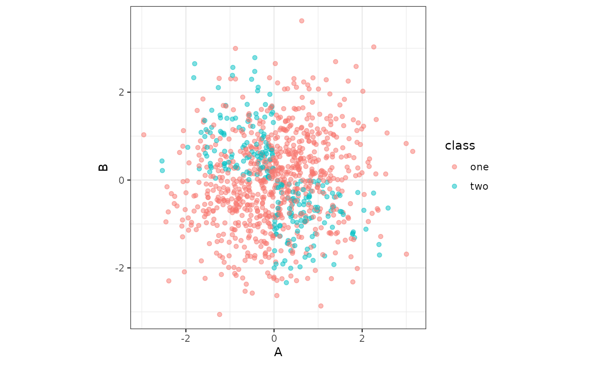

These functions can be used to generate simulated data for supervised (classification and regression) and unsupervised modeling applications.
Usage
sim_classification(
num_samples = 100,
method = "caret",
intercept = -5,
num_linear = 10,
keep_truth = FALSE
)
sim_regression(
num_samples = 100,
method = "sapp_2014_1",
std_dev = NULL,
factors = FALSE,
keep_truth = FALSE
)
sim_noise(
num_samples,
num_vars,
cov_type = "exchangeable",
outcome = "none",
num_classes = 2,
cov_param = 0
)
sim_logistic(num_samples, eqn, correlation = 0, keep_truth = FALSE)
sim_multinomial(
num_samples,
eqn_1,
eqn_2,
eqn_3,
correlation = 0,
keep_truth = FALSE
)Arguments
- num_samples
Number of data points to simulate.
- method
A character string for the simulation method. For classification, the single current option is "caret". For regression, values can be "sapp_2014_1", "sapp_2014_2", "van_der_laan_2007_1", or "van_der_laan_2007_2". See Details below.
- intercept
The intercept for the linear predictor.
- num_linear
Number of diminishing linear effects.
- keep_truth
A logical: should the true outcome value be retained for the data? If so, the column name is
.truth.- std_dev
Gaussian distribution standard deviation for residuals. Default values are shown below in Details.
- factors
A single logical for whether the binary indicators should be encoded as factors or not.
- num_vars
Number of noise predictors to create.
- cov_type
The multivariate normal correlation structure of the predictors. Possible values are "exchangeable" and "toeplitz".
- outcome
A single character string for what type of independent outcome should be simulated (if any). The default value of "none" produces no extra columns. Using "classification" will generate a
classcolumn withnum_classesvalues, equally distributed. A value of "regression" results in anoutcomecolumn that contains independent standard normal values.- num_classes
When
outcome = "classification", the number of classes to simulate.- cov_param
A single numeric value for the exchangeable correlation value or the base of the Toeplitz structure. See Details below.
- eqn, eqn_1, eqn_2, eqn_3
An R expression or (one sided) formula that only involves variables
AandBthat is used to compute the linear predictor. External objects should not be used as symbols; see the examples below on how to use external objects in the equations.- correlation
A single numeric value for the correlation between variables
AandB.
Details
Specific Regression and Classification methods
These functions provide several supervised simulation methods (and one
unsupervised). Learn more by method:
method = "caret"
This is a simulated classification problem with two classes, originally
implemented in caret::twoClassSim() with all numeric predictors. The
predictors are simulated in different sets. First, two multivariate normal
predictors (denoted here as two_factor_1 and two_factor_2) are created
with a correlation of about 0.65. They change the log-odds using main
effects and an interaction:
intercept - 4 * two_factor_1 + 4 * two_factor_2 + 2 * two_factor_1 * two_factor_2 The intercept is a parameter for the simulation and can be used to control the amount of class imbalance.
The second set of effects are linear with coefficients that alternate signs and have a sequence of values between 2.5 and 0.25. For example, if there were four predictors in this set, their contribution to the log-odds would be
-2.5 * linear_1 + 1.75 * linear_2 -1.00 * linear_3 + 0.25 * linear_4(Note that these column names may change based on the value of num_linear).
The third set is a nonlinear function of a single predictor ranging between
[0, 1] called non_linear_1 here:
(non_linear_1^3) + 2 * exp(-6 * (non_linear_1 - 0.3)^2) The fourth set of informative predictors are copied from one of Friedman's
systems and use two more predictors (non_linear_2 and non_linear_3):
2 * sin(non_linear_2 * non_linear_3) All of these effects are added up to model the log-odds.
method = "sapp_2014_1"
This regression simulation is from Sapp et al. (2014). There are 20 independent Gaussian random predictors with mean zero and a variance of 9. The prediction equation is:
predictor_01 + sin(predictor_02) + log(abs(predictor_03)) +
predictor_04^2 + predictor_05 * predictor_06 +
ifelse(predictor_07 * predictor_08 * predictor_09 < 0, 1, 0) +
ifelse(predictor_10 > 0, 1, 0) + predictor_11 * ifelse(predictor_11 > 0, 1, 0) +
sqrt(abs(predictor_12)) + cos(predictor_13) + 2 * predictor_14 + abs(predictor_15) +
ifelse(predictor_16 < -1, 1, 0) + predictor_17 * ifelse(predictor_17 < -1, 1, 0) -
2 * predictor_18 - predictor_19 * predictor_20The error is Gaussian with mean zero and variance 9.
method = "sapp_2014_2"
This regression simulation is also from Sapp et al. (2014). There are 200
independent Gaussian predictors with mean zero and variance 16. The
prediction equation has an intercept of one and identical linear effects of
log(abs(predictor)).
The error is Gaussian with mean zero and variance 25.
method = "van_der_laan_2007_1"
This is a regression simulation from van der Laan et al. (2007) with ten random Bernoulli variables that have a 40% probability of being a value of one. The true regression equation is:
2 * predictor_01 * predictor_10 + 4 * predictor_02 * predictor_07 +
3 * predictor_04 * predictor_05 - 5 * predictor_06 * predictor_10 +
3 * predictor_08 * predictor_09 + predictor_01 * predictor_02 * predictor_04 -
2 * predictor_07 * (1 - predictor_06) * predictor_02 * predictor_09 -
4 * (1 - predictor_10) * predictor_01 * (1 - predictor_04)The error term is standard normal.
method = "van_der_laan_2007_2"
This is another regression simulation from van der Laan et al. (2007) with twenty Gaussians with mean zero and variance 16. The prediction equation is:
predictor_01 * predictor_02 + predictor_10^2 - predictor_03 * predictor_17 -
predictor_15 * predictor_04 + predictor_09 * predictor_05 + predictor_19 -
predictor_20^2 + predictor_09 * predictor_08The error term is also Gaussian with mean zero and variance 16.
method = "hooker_2004"
Hooker (2004) and Sorokina at al (2008) used the following:
pi ^ (predictor_01 * predictor_02) * sqrt( 2 * predictor_03 ) -
asin(predictor_04) + log(predictor_03 + predictor_05) -
(predictor_09 / predictor_10) * sqrt (predictor_07 / predictor_08) -
predictor_02 * predictor_07Predictors 1, 2, 3, 6, 7, and 9 are standard uniform while the others are
uniform on [0.6, 1.0]. The errors are normal with mean zero and default
standard deviation of 0.25.
sim_noise()
This function simulates a number of random normal variables with mean zero.
The values can be independent if cov_param = 0. Otherwise the values are
multivariate normal with non-diagonal covariance matrices. For
cov_type = "exchangeable", the structure has unit variances and covariances
of cov_param. With cov_type = "toeplitz", the covariances have an
exponential pattern (see example below).
Logistic simulation
sim_logistic() provides a flexible interface to simulating a logistic
regression model with two multivariate normal variables A and B (with
zero mean, unit variances and correlation determined by the correlation
argument).
For example, using eqn = A + B would specify that the true probability of
the event was
prob = 1 / (1 + exp(A + B))The class levels for the outcome column are "one" and "two".
Multinomial simulation
sim_multinomial() can generate data with classes "one", "two", and
"three" based on the values in arguments eqn_1, eqn_2, and eqn_3,
respectfully. Like sim_logistic() these equations use predictors A and
B.
The individual equations are evaluated and exponentiated. After this, their
values are, for each row of data, normalized to add up to one. These
probabilities are them passed to stats::rmultinom() to generate the outcome
values.
References
Van der Laan, M. J., Polley, E. C., & Hubbard, A. E. (2007). Super learner. Statistical applications in genetics and molecular biology, 6(1). DOI: 10.2202/1544-6115.1309.
Sapp, S., van der Laan, M. J., & Canny, J. (2014). Subsemble: an ensemble method for combining subset-specific algorithm fits. Journal of applied statistics, 41(6), 1247-1259. DOI: 10.1080/02664763.2013.864263
Hooker, G. (2004, August). Discovering additive structure in black box functions. In Proceedings of the tenth ACM SIGKDD international conference on Knowledge discovery and data mining (pp. 575-580). DOI: 10.1145/1014052.1014122
Sorokina, D., Caruana, R., Riedewald, M., & Fink, D. (2008, July). Detecting statistical interactions with additive groves of trees. In Proceedings of the 25th international conference on Machine learning (pp. 1000-1007). DOI: 10.1145/1390156.1390282
Examples
set.seed(1)
sim_regression(100)
#> # A tibble: 100 × 21
#> outcome predictor_01 predictor_02 predictor_03 predictor_04
#> <dbl> <dbl> <dbl> <dbl> <dbl>
#> 1 8.49 -1.88 -1.86 1.23 2.68
#> 2 19.3 0.551 0.126 5.07 -3.14
#> 3 57.7 -2.51 -2.73 4.76 5.91
#> 4 -8.41 4.79 0.474 -0.993 -1.15
#> 5 43.0 0.989 -1.96 -6.86 4.96
#> 6 72.3 -2.46 5.30 7.49 4.54
#> 7 -3.36 1.46 2.15 2.00 0.249
#> 8 -3.82 2.21 2.73 1.62 1.70
#> 9 22.7 1.73 1.15 -0.0402 -3.07
#> 10 25.7 -0.916 5.05 1.53 0.969
#> # ℹ 90 more rows
#> # ℹ 16 more variables: predictor_05 <dbl>, predictor_06 <dbl>,
#> # predictor_07 <dbl>, predictor_08 <dbl>, predictor_09 <dbl>,
#> # predictor_10 <dbl>, predictor_11 <dbl>, predictor_12 <dbl>,
#> # predictor_13 <dbl>, predictor_14 <dbl>, predictor_15 <dbl>,
#> # predictor_16 <dbl>, predictor_17 <dbl>, predictor_18 <dbl>,
#> # predictor_19 <dbl>, predictor_20 <dbl>
sim_classification(100)
#> # A tibble: 100 × 16
#> class two_factor_1 two_factor_2 non_linear_1 non_linear_2 non_linear_3
#> <fct> <dbl> <dbl> <dbl> <dbl> <dbl>
#> 1 class… -2.27 -1.18 -0.245 0.888 0.354
#> 2 class… -0.537 0.420 0.621 0.170 0.374
#> 3 class… 3.23 2.39 0.163 0.957 0.840
#> 4 class… 3.42 0.236 0.110 0.788 0.134
#> 5 class… 0.571 -0.100 -0.487 0.377 0.541
#> 6 class… -1.61 -0.0701 0.393 0.789 0.515
#> 7 class… 2.74 2.51 -0.751 0.459 0.931
#> 8 class… 0.0763 -0.679 0.307 0.220 0.771
#> 9 class… 0.0591 -2.35 0.402 0.566 0.712
#> 10 class… -1.39 -2.10 -0.887 0.0154 0.0784
#> # ℹ 90 more rows
#> # ℹ 10 more variables: linear_01 <dbl>, linear_02 <dbl>, linear_03 <dbl>,
#> # linear_04 <dbl>, linear_05 <dbl>, linear_06 <dbl>, linear_07 <dbl>,
#> # linear_08 <dbl>, linear_09 <dbl>, linear_10 <dbl>
# Flexible logistic regression simulation
if (rlang::is_installed("ggplot2")) {
library(dplyr)
library(ggplot2)
sim_logistic(1000, ~ .1 + 2 * A - 3 * B + 1 * A *B, corr = .7) %>%
ggplot(aes(A, B, col = class)) +
geom_point(alpha = 1/2) +
coord_equal()
f_xor <- ~ 10 * xor(A > 0, B < 0)
# or
f_xor <- rlang::expr(10 * xor(A > 0, B < 0))
sim_logistic(1000, f_xor, keep_truth = TRUE) %>%
ggplot(aes(A, B, col = class)) +
geom_point(alpha = 1/2) +
coord_equal() +
theme_bw()
}
#>
#> Attaching package: ‘dplyr’
#> The following objects are masked from ‘package:stats’:
#>
#> filter, lag
#> The following objects are masked from ‘package:base’:
#>
#> intersect, setdiff, setequal, union

## How to use external symbols:
a_coef <- 2
# splice the value in using rlang's !! operator
lp_eqn <- rlang::expr(!!a_coef * A+B)
lp_eqn
#> 2 * A + B
sim_logistic(5, lp_eqn)
#> # A tibble: 5 × 3
#> A B class
#> <dbl> <dbl> <fct>
#> 1 -0.315 0.990 one
#> 2 0.964 -0.0664 one
#> 3 1.16 0.258 one
#> 4 1.09 -0.621 one
#> 5 2.65 -0.776 one
# Flexible multinomial regression simulation
if (rlang::is_installed("ggplot2")) {
}
#> NULL